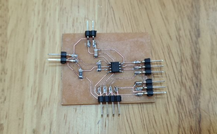

For the final module project, I have decide to make an automatic cat feeder. I have a cat named Cheetah and he eats a lot. That got me thinking into designing and making an automatic feeder for him. However, to make it a little more challenging, I will be implementing a lcd I2c screen to display messages and push buttons for different modes of feeding.
As for planning, I simply drew out some rough ideas on a page. It has been quite a while since I drew anything so it was nice to stretch my fingers.
Custom PCB board
Electronics needed:
Custom PCB board
4,3 and 2 pin headers
0.1uf capacitor
2 x 1002 resistors
Attiny412
This being the first time designing, I asked Mr Steven to help me out. So we designed a rough idea of how the board would look like on the whiteboard. Since I did not need too many pins, I opted to use the attiny412 as my main processor. I will be implementing 2 push buttons and an I2c lcd.
I started out by designing the cicuit via eagle. It took quite some time to route the lines for the board. I tried using the autoroute function but the results were not to my liking. So I manually routed the lines.
Next , I milled the board using the stepcraft machine. Here you can see the milled board. Fortunately for me, I only had to mill the board once. I am not very confident in my soldering, so I decided to slowly peel the unused copper. I did so with a pen knife and carefully peeling it afterwards. It took quite a bit and my fingers were starting to hurt. The finished product was very satisfiying as I could see the individual copper lines. Afterwards, I layed the components that were going to be soldered.
Here is the how the boards looks like after soldering. I was pretty impressed with how my soldering turned out. The board look much better from my previous attempts in soldering.

After soldering, I double checked the connections with a multimeter before trying out simple codes for the components that will be used. You can see below that I managed to successfully input a simple servo coding as well as a hello world for the I2c LCD. It did however take lots of trouble shooting for the I2c as it was outputting error codes. Fortunately after a bit of help from Mr Steven, it turns out that the SDA and SCL wires were mixed up.
{kind=link}